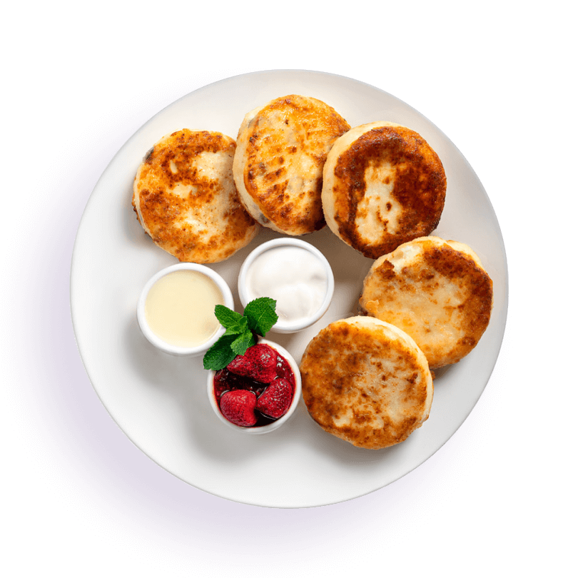

Syrniki recipe

Description
Here’s a simple recipe for syrniki (Russian cheese pancakes):
- 500g cottage cheese (or farmer's cheese)
- 1 egg
- 3 tbsp flour (plus extra for dusting)
- 2 tbsp sugar
- 1 tsp vanilla extract (optional)
- A pinch of salt
- Oil for frying
Steps
- In a bowl, mix the cottage cheese, egg, sugar, vanilla, and salt until smooth.
- Gradually add flour and mix until the dough is firm but soft.
- Dust your hands with flour, form small patties, and coat them lightly with flour.
- Heat oil in a pan over medium heat. Fry the syrniki for 3–4 minutes on each side until golden brown.
- Serve warm with sour cream, jam, or honey.
Enjoy these traditional dishes!